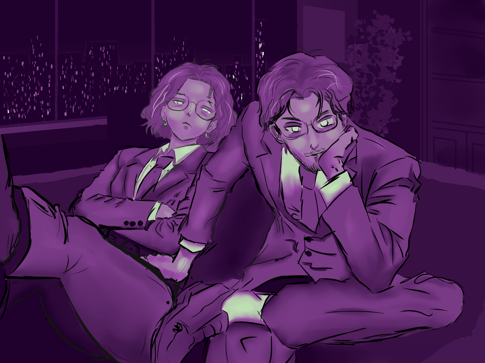

Una selección de proyectos donde mezclo ilustración, 3D, animación, edición y diseño interactivo.
Ver portafolio ↗Binchis
@binchisas
2D · 3D · Motion · UI · Web · Chaos
Artista digital y dev creativo. Hago personajes, animaciones, edits, 3D, UI y cosas visuales.
Ilustración
Animación
3D
Edición
UI
Web
Portafolio visual
Links principales
Motion / Arte en video
Animación / edit
Personajes, composición y movimiento.
GGs
Clip visual
Jax Ribbit
Animación / fan edit
Nicky
Arte en movimiento

Ilustración
Arte digital
“No vine a entenderlo todo, vine a estar vivo mientras pasa.”